Ilan Luciano is a passionate software developer and entrepreneur. Throughout the past eight years, he has served as the CTO of an online gaming platform, taught game development at a STEM summer program, developed a digital attendance management system, helped enhance a digital research study management platform, led a high school computer science club, and worked on a handful of passion projects. Some of his professional work and many of his hobby projects are listed below.
In addition to his software development background, he has experience working collaboratively with a team of developers and marketers, communicating professionally and reliably with clients, and working as a summer camp counselor.
He is currently pursuing a bachelor's degree at Lehigh University’s Computer Science and Business Honors Program.
His resume is available upon request.
The programming languages, technologies, and platforms he has worked with are:
Javascript (both Node and frontend)
C# (inside and outside of Unity)
HTML and CSS
Golang
Python
Java
PHP
C (Basic syntax from AP CSP curriculum)
Socket.io, Express, JWT Authentication
MySQL and PostgreSQL (has used Prisma ORM and GORM)
Cloudflare, Github, AWS EC2 and other cloud hosting
Search Console, DevTools Lighthouse, and SEO
Google Analytics
You can contact him however is most convenient for you:
Totally Science was an online gaming website founded in 2021 that started growing rapidly in early 2022. It had a library of hundreds of free to play games and a proxy that allowed you to access any website semi-anonymously. Every month over 250 thousand users from all over the world played their favorite games on Totally Science.
Ilan served as the CTO of Totally Science until March 2024 when it was sold to a larger unblocked games company. His role consisted of developing and maintaining the Node JS based backend as well as making improvements to the performance and usability of the frontend codebase.
The website available at totallyscience.co is no longer the one Ilan developed. The new owners have replaced it with a different online gaming site. The images below are from the version he worked on.
Flash Study is a website with tools for preparing for assessments. It has free tools for memorization including flashcards and practice questions. The practice questions feature is similar to Quizlet Learn in that it quizzes you on a set of course materials. There is also an experimental note creation and sharing feature.
Ilan has been developing this solo as a side project. The site may have incomplete features. He uses it often when preparing for foreign language exams.
Tabout is a multiplayer educational game. Educators can create accounts and make sets of questions to share with their students. They can then host games using these sets that students can join. Students are split into two teams and compete in a battle displayed on the hosts screen by answering questions correctly.
Ilan created Tabout in collaboration with his school's computer science club. Other members helped to plan and design the game as well as create the battling animation. Ilan created the website's interface and multiplayer functionality
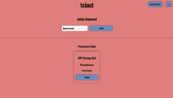
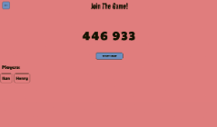
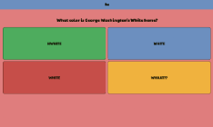
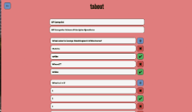
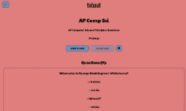
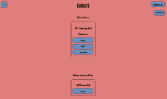
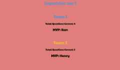
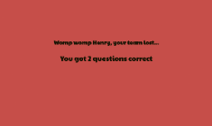
Spotify Registration Clone
This is a replication of Spotify's registration flow, created with a C# web server Ilan developed. He Used HTML, CSS, and JS to create a clone of the user interface. He only copied colors from the original website, everything else was cloned through experimentation to make it as close to the original spotify flow as possible. It isn't visible in these images but the error messages are responsive and the animations are replicated from spotify as well.
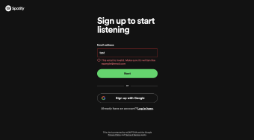
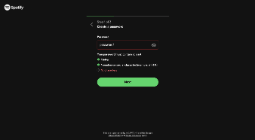
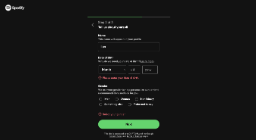
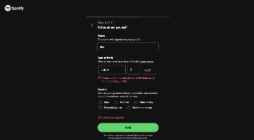
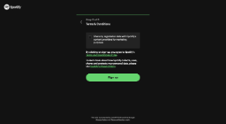
Unity Suika Clone
This is a clone of Suika, commonly known as Watermelon Game, that Ilan created in Unity for a course he taught at Discover Camp, a STEM-focused summer camp. Using this copy as the demo, Ilan taught a group of elementary and middle schoolers how to use the Unity game engine and C# to create this game.
Efficiency Lists is a simple to-do list website. It includes the ability to add, remove, and edit items with convenient keybinds. You can also categorize the items into topics for further organization.
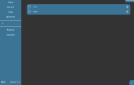
Isometric Tiles
A little bit of experimentation with isometric tiles using the HTML5 canvas. Move around the map with WASD.
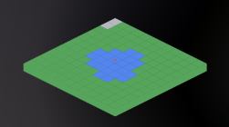
2048
Some clean UI for a version of 2048 Ilan was planning to create. He never ended up finishing the functionality.
Some simple games Ilan made a while ago in construct 3.
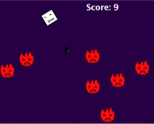
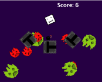
Congressional App Challange 2021
School computer science club Congressional App Challange submission from 2021 (9th grade).
He made digital list of local businesses to shop at and support during the COVID-19 pandemic. The list can be sorted by category and includes links to the businesses' websites
 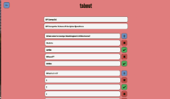
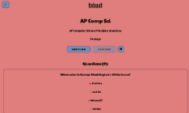
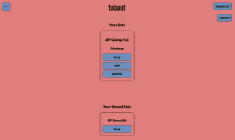
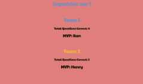
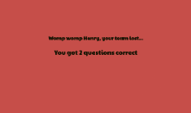
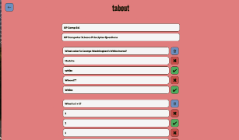
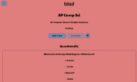
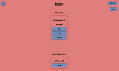
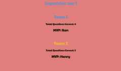
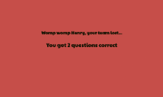